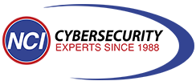

Nashville ComputerLeave the lock-in. Keep the operational depth.
Nashville Computer is evaluating whether Rev.io can replace Autotask with a connected, month-to-month platform for ticketing, projects, billing, payments, inventory, and reporting—without trading one vendor dependency for another.
A relationship-led MSP built around dependable service, personal accountability, and business outcomes.
Business profile
Founded in 1988, NCI delivers managed IT, cybersecurity, cloud, business continuity, consulting, and technology solutions for small businesses and nonprofits across Nashville, Detroit, Atlanta, and beyond.
Operating model
Roughly 16 technical employees support remote help desk, onsite service, projects, and security. Four technicians regularly work onsite while approximately ten staff the help desk.
Customer promise
NCI emphasizes fast, professional, jargon-free support and its EPPIC values: dependability, accountability, plus-one service, integrity, continual improvement, and family first.
Sources: Nashville Computer website—including About, Services, Service Area, and Testimonials—and September 10 discovery meeting.
The July 2027 contract creates runway—but vendor risk creates urgency.
Autotask exit and contingency pressure
NCI is separating from the broader Kaseya ecosystem and wants a viable contingency if service continuity becomes an issue before contract expiration.
Acquisition fatigue is a decision criterion
NCI signed Autotask shortly before its acquisition and has experienced similar disruption across other products. Halo’s proposed no-sell language has made vendor stability a formal evaluation item.
Halo sets the initial benchmark
NCI reported that Halo is currently less expensive, has offered transition access through July 2027, and provides a Neo integration. Rev.io must earn the difference through billing depth, connected operations, payments, and workflow fit.
The group must believe it
Technicians validate daily usability first. Troy and Samantha then take the recommendation to a four-person leadership team, making technical proof and financial proof equally important.
Preserve Autotask’s operating coverage while fixing projects, workflows, and ecosystem dependence.
Ticketing that technicians accept
Fast notes, dispatch, templates, internal/client communication, timers, mobile work, workload-aware assignment, and clean customer history must stand up to technician scrutiny.
Neo is a real comparison gap
NCI uses Neo for AI ticket assignment based on defined criteria and technician workload. Rev.io has no out-of-box Neo integration; the demo must prove the native workflow or define the gap honestly.
Projects outside the PSA
Autotask project management did not meet the need, so NCI uses Microsoft Task Manager. Kirk needs repeatable intake-to-output workflows for onboarding and a PE client’s ongoing project backlog.
Cross-functional documentation
NCI wants SOPs and process documentation in one source of truth—or a repository that integrates cleanly across departments. Hudu scope must be documented, not assumed.
Billing cadence and profitability
Samantha approves time weekly, invoices technician time around the 5th and 20th, bills MRR monthly in advance, and relies on granular contract profitability reporting.
Inventory accuracy
Barcode-supported inventory is a long-standing owner request. NCI needs parts pulled from stock or vehicles onto tickets and kept accurate through back-office and mobile workflows.
Connect the full service lifecycle—from intake through margin and cash.
Native billing depth
Flexible cycles, block-hour overages, monthly-advance MRR, service charges, credit-card surcharge handling, and included SureTax capability were discussed as areas to validate against NCI’s workflows and Halo’s billing depth.
Connected reporting
Dashboards can connect ticket, SLA, utilization, project, agreement, profitability, billing, and payment data without rebuilding the operational story across tools.
Month-to-month model
The commercial model removes long-term software lock-in. Platform modules and integrations are included for standard users; Rev.io Payments is separate.
The evaluation is only credible if the ecosystem works—not just the PSA screens.
NinjaRMM
- Customer, contact, and asset synchronization
- Ticket creation from RMM activity
- Validate endpoint-to-agreement billing behavior
Hudu
- Two-way customer/contact sync discussed
- Document the full supported object set
- Define documentation ownership and cross-functional workflow
Neo AI dispatcher
- No native connector today
- Compare Revy/rules against Neo’s workload-aware assignment
- Decide whether Neo remains, is replaced, or requires scoped integration
QuickBooks Online
- Validate customer, invoice, payment, and purchase-order sync
- Confirm posting and reconciliation workflow
- Preserve finance’s required system-of-record controls
Ingram Micro + Pax8
- Ingram hardware procurement workflow
- Pax8 Microsoft 365 licensing and bill-on-behalf mix
- Validate product, cost, quantity, and billing reconciliation
DocuSign + Microsoft tools
- Assess whether native e-signature can remove DocuSign friction
- Replace or complement Microsoft Task Manager
- Map migration of existing CRM, contract, and project data
Run product fit and financial fit as two connected swim lanes.
Platform economics
Discovery pricing was $100 per standard user/month and $30 per field-only user/month, with platform modules and integrations included. Final structure remains negotiable and must be compared to Halo and retained tools.
Payments opportunity
Based on NCI’s reported approximately $300K/month in current processing volume, compare Rev.io Payments against ConnectBooster using three recent merchant statements, including ACH/card mix, effective rates, fees, surcharges, and reconciliation effort.
Operational capacity
Quantify time saved across dispatch, weekly approvals, twice-monthly service billing, MRR review, profitability reporting, project coordination, inventory handling, and duplicate system updates.
Risk-adjusted value
Include accelerated migration readiness, month-to-month flexibility, onboarding support, data portability, vendor stability, and the cost of disruption—not just license price.
Make the next demo a technician test—not another feature parade.
Sep 16 · technical workflow demo
Run a real ticket from intake through triage, workload-aware assignment, technician notes, SLA handling, mobile/onsite work, time capture, parts, customer communication, resolution, and billing readiness.
Close integration questions
Send Hudu scope, demonstrate Ninja asset flow, compare Revy/rules with Neo, and validate Ingram, Pax8, QBO, mobile barcode, and purchase-order workflows.
Then prove finance
Schedule Samantha and the accountant for agreements, time approval, twice-monthly service invoicing, MRR in advance, taxes, QBO, profitability dashboards, payments, and surcharge handling.
Build both transition paths
Validate the discovery-stage estimate of a 3–4 month implementation and outline a contingency migration plan, including data scope, owners, minimum go-live modules, training cadence, validation, and fallback controls.
Open items: Hudu documentation, Neo/Revy comparison, dashboard demo, payment statements and quote, attendee confirmation, and acquisition/no-sell response.